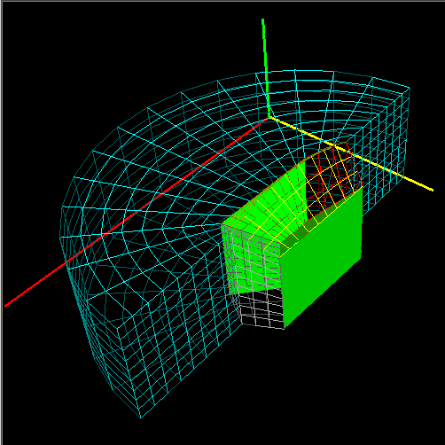

The graphics window uses OpenGL to display the currently selected objects. To view may be rotated, translated and scaled using the mouse. The axes are turned on in the example view, and are displayed along the minimum edges of the bounding box. The x-axis is shown in red, the y-axis in yellow, and the z-axis in green.
The view may be adjusted by holding down a mouse button while moving the mouse in the graphics window. The mouse button bindings and the corresponding action are:
| Button 1 | rotates |
| Button 2 or Control-Button 1 |
zooms |
| Button 3 or Shift-Button 1 |
translates |